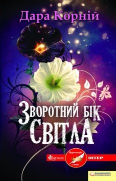
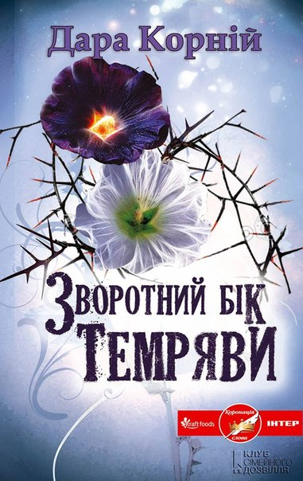
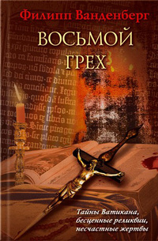
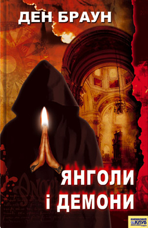
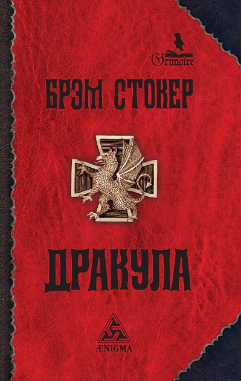
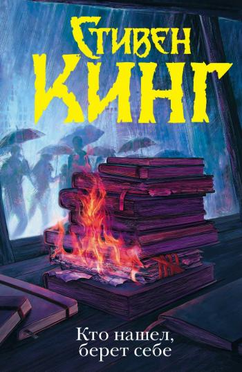
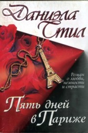
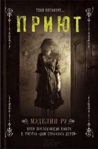
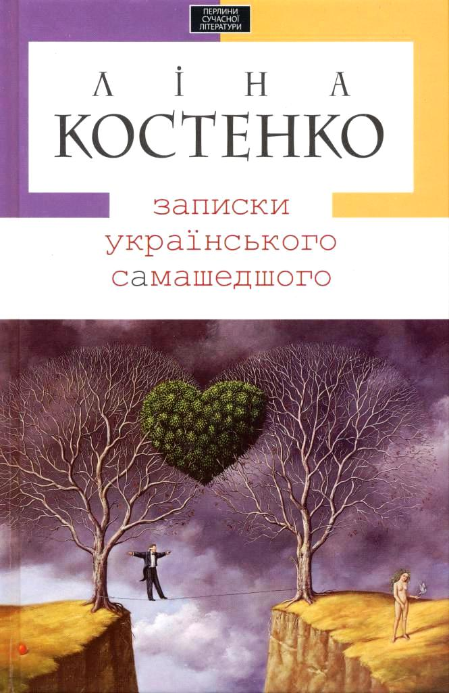
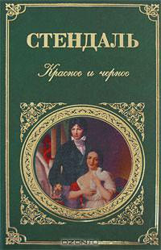

ТОП 10 кращих книг | >
|---|
Назва: Зворотний бік світла Автор: Корній Дара Жанр: фентезі Опис: Поки прихильники сутінкової саги сумують над тим, що Стефані Маєр відклала завершення свого роману «Сонце півночі» (сповідь Едварда Каллена), її українська колега Дара Корній започаткувала власну сагу. Зазирніть у чорну душу темного безсмертного — і ви побачите там кохання, яке виточило лють. Сутінки спустилися на світ Чотирьох Сонць, коли лихий Стрибог, стоячи на Дівич-горі, віддавав накази нищити, палити все, що було дорого Птасі — на той час безпорадній дівчинці. Це згодом вона стане найсильнішою з світлих безсмертних і… пробачить йому, і покохає, і приборкає звіра… Але чому надзвичайну дитину ціною власного життя йому народить звичайна смертна жінка? Світло не може існувати без темряви, а інколи вони навіть закохуються одне в одного: Птаха — світла безсмертна, Стриб — темний. А от Мальва ще не визначилася, більше того — дівчина донедавна й гадки не мала про своє покликання і про те, чия кров тече в її жилах. До сімнадцяти років Птаха берегла її як зіницю ока, та вже час її квіточці розпускати пелюстки — чорні чи білі, новонароджена безсмертна обиратиме сама! Видання: 2013 р. Назва: Зворотний бік темряви Автор: Корній Дара Жанр: фентезі Опис: Разом зі своїм батьком темним безсмертним Стрибогом Мальва перейшла до світу темних. Її наставниця Птаха свідомо пішла на цей учинок, адже вважає, що Мальва сама повинна зробити вибір: на чиїй стороні їй залишитися. Могутність дівчини зростає день у день, а знання – щогодини, та невдовзі вона дізнається про зворотний бік темряви… То чию сторону врешті-решт обере Мальва, адже від цього залежить майбутнє, і не лише її? Видання: 2013 р. Назва: Восьмий гріх Автор: Філіп Ванденберг Жанр:трилер Опис: Від майстра археологічного трилера! Історія на межі реальності і вигадки. Безцінні реліквії, загадкові смерті допоможуть таємному братству осягнути суть восьмого гріха. Антиквара Мальберг з Мюнхена в Рим привів інтерес до приватної колекції книг. Однак, виявивши труп своєї коханої в її власній квартирі, він вирішує почати розслідування, тому що, на відміну від поліції, впевнений - сталося вбивство. Ставши учасником заплутаною гри, чи не виявився він у пастці? Адже мова вже йде про таємниці Ватикану, наукових експериментах і бунтівному кардинала, який виношує небезпечний план. Видання: 2008 р. Назва: Янголи і демони Автор: Ден Браун Жанр:трилер, історичний детектив Опис:Всесвітньо відомого фахівця з релігійної символіки Роберта Ленґдона терміново викликають до Швейцарії, щоб дослідити загадковий знак, випалений на грудях по-звірячому вбитого фізика. Він робить приголомшливе відкриття: це справа рук давнього ворога Церкви — таємної організації ілюмінатів. Крім того, у Ватикані закладено надпотужну бомбу, яку має знайти саме Ленґдон разом із чарівною жінкою-науковцем Вітторією Ветрою. На них чекає шалена пригода: йдучи по сліду безжального вбивці, збирати трупи, видератися на собори, спускатися в підземелля, щоб знайти нарешті лігво ілюмінатів і врятувати Святий престол. Видання: 2010 р. Назва: Дракула Автор: Брем Стокер Жанр: містика Опис:Брем Стокер - автор безлічі книг, деякі з яких свого часу були дуже популярні, - «Лігво Білого Хробака», «Перевал змій», «Леді в савані». Але справжнє безсмертя знайшов лише один його роман - «Дракула». Ця книга - далеко не перше оповідання про вампірів - стала справжньою класикою жанру, його еталоном і послужила причиною бурхливого сплеску всесвітнього захоплення «вампірської» темою, що не загасаючого донині. Приклад тому остання екранізація роману - однойменний фільм Ф.Ф.Копполи. Стокеру вдалося на основі різних міфів створити свій новий, надзвичайно красивий світ, що тягнеться від Середніх століть до наших днів, від загадкової Трансільванії до затишного Лондона. А головне - створити нового міфічного героя. Героя на всі часи. Видання: 1897 р. Назва: Хто знайшов, бере собі Автор: Стівен Кінг Жанр: Сучасний детектив, трилер. Опис:Геній - письменник Ротстайн, перш бунтар, а тепер самітник ось уже довгі роки нічого не публікує. Але це не означає, що він нічого не пише. В його будинку - безліч чернеток, що чекають «свого часу». Збірки поезій, розповіді і навіть продовження знаменитої саги, яка змінила долю чи не цілого покоління фанатів Ротстайн. Але тепер крутий поворот робить доля самого письменника - чернетки викрадають, а Ротстайн жорстоко вбивають. Однак пройде багато років, перш ніж блокноти письменника знову спливуть на поверхню, щоб самим незбагненним чином з'єднати людей, які мали відношення до трагічних подій, пов'язаних з Містером Мерседесом . Видання: 2015 р. Назва: П'ять днів у Парижі Автор: Даніела Стіл Жанр: роман Опис:Олівія - загадкова тендітна жінка з трагічним минулим ... До зустрічі з нею в паризькому готелі «Рітц» Пітер Хаскелл і не підозрював про те, що вся його життя побудована на компроміси з власною совістю. Тепер доля ставить його перед вибором - любов і свобода або багатство і кар'єра. Коли літак торкнувся злітної смуги аеропорту Шарль де Голль, погода у французькій столиці стояла напрочуд тепла. Через п'ять хвилин Пітер Хаскелл вже пробирався крізь натовп, притискаючи до себе маленьку валізку. Опинившись у митного поста, він заусміхався, незважаючи на спеку і кількість людей, що стояли перед ним. Пітер Хаскелл любив Париж. Видання: 2005 р. Назва: Притулок Автор: Меделін Ру Жанр: Зарубіжна література, Містика, Сучасна література, Триллер, Фантастика. Опис:Стара будівля ... Потріскані стіни ... Загадкові фотографії ... Нічні кошмари ... Той, хто потрапляв в цей будинок, залишався в ньому назавжди. Але Деніел цього не знав. Він приїхав сюди на літні курси для обдарованих підлітків і набагато пізніше дізнався, що колись ця будівля була лікарнею для дивних людей. Що відбувалося тут? Чому деякі коридори і підвал замуровані? Хтось потайки стежить за ним. В бібліотеці коледжу Деніел з друзями знаходить загадкові фотографії. А незабаром трапляється те, що шокує і учнів, і педагогів. Ден повинен розгадати таємницю притулку, інакше він сам опиниться в небезпеці ... Книга ілюстрована унікальними малюнками й фото. Видання: 2014 р. Назва: Записки українського самашедшого Автор: Ліна Костенко Жанр: проза Опис:Роман написано від імені 35-річного комп'ютерного програміста, який на тлі особистої драми прискіпливо, глибоко й болісно сканує усі вивихи нашого глобалізованого часу. У світі надмірної (дез)інформації і тотального відчуження він — заручник світових абсурдів — прагне подолати комунікативну прірву між чоловіком і жінкою, між родиною і професією, між Україною і світом. За жанровою стилістикою «Записки українського самашедшого» — насичений мікс художньої літератури, внутрішніх щоденників, сучасного літописання і публіцистики. Це перший опублікований прозовий роман видатної української поетеси. Видання: 2010 р. Назва: Червоне і чорне Автор: Стендаль Фредерік Жанр:Психологічний роман, історичний роман Опис:Жульєн – обдарований розумом, спрагою знань, різними здатностями. Священик рекомендує Жюльена як гувернера місцевому багатієві де Реналю. Мадам де Реналь дуже нещасна, обділена життям. Заміж вийшла рано, а також турботлива мати. Поява Жюльена виявляється крутим поворотом у її житті.Для Жюльена зустріч із г-жой де Реналь – успіх. Він дозволяє їй любити себе. Служниця доносить духівникові на зв’язок де Реналь і Жюльена. Жюльен залишає містечко й відправляється в Безонскую семінарію. Там його ставлять на місце. Його шлях наверх, що йде успішно, просувається. Начальник Семінарії рекомендує його маркізові де Ламо. Дочка Матильда – норовлива, свавільна. Жюльен знайомить із російським князем і одержує від нього записки. Жюльен стає відомим у короткий строк. Матильда вирішує скорити Жюльена. Запрошує його на побачення до себе в кімнату. Жюльен стає нареченим Матильди. Слухи доходять до його міста. Г-жа де Реналь пише лист про його минуле. Жюльен читає лист і летить у містечко. Він стріляє в г-жу де Реналь у церкві. Його відразу заарештовують. Жюльен стає жертвою суспільних відносин. Матильда приїжджає у в’язницю, щоб викрасти Жюльена. Їй не вдається це зробити. Тоді подібно Марго вона викуповує голову улюбленого й ховає її власними руками. Автор повідомляє про те, що всі складності, що виникли в долі Матильди були вирішені. Вона народила вдалині. Де Реналь теж приїжджала у в’язницю. Вона просила в Жюльена прощення. Жюльен розуміє, що вона – єдина, хто йому дорога й гідна його любові. Для неї все перестає існувати. Жюльен просить її відмовитися від думки про самогубство. Вона тримає слово Видання: 1830 р. |